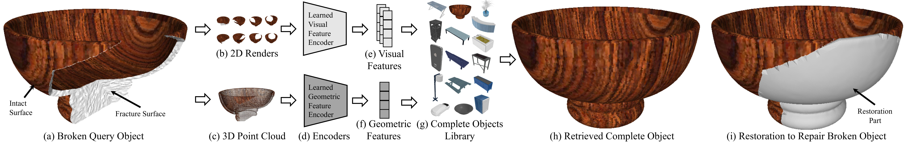

Using Learned Visual and Geometric Features to Retrieve Complete 3D Proxies for Broken Objects
ACM Symposium on Computational Fabrication 2021
Abstract
3D printing offers the opportunity to perform automated restoration of objects to reduce household waste, restore objects of cultural heritage, and automate repair in medical and manufacturing domains. We present an approach that takes a 3D model of a broken object and retrieves proxy 3D models of corresponding complete objects from a library of 3D models, with the goal of using the complete proxy to enable repair of the broken object. Our approach retrieves complete objects that are visually and geometrically similar to the query broken object by generating multi-view renders and point cloud representations of the query and feeding them as input to learned visual and geometric feature encoders based on neural networks. We demonstrate results for retrieval of complete proxies for broken object models with breaks generated synthetically using models from the ShapeNet dataset, and from publicly available datasets of scanned everyday and cultural heritage objects. Using combined visual and geometric features, our approach shows consistently lower Chamfer distance than when visual or geometric features are used alone. Our approach outperforms the existing state-of-the-art method in retrieval of proxies for broken objects in terms of the Chamfer distance. The 3D proxies returned by our approach enable understanding of object geometry to identify object portions requiring repair, incorporate user preferences, and generate 3D printable restoration components.
Links
Cite us!
put a citation here